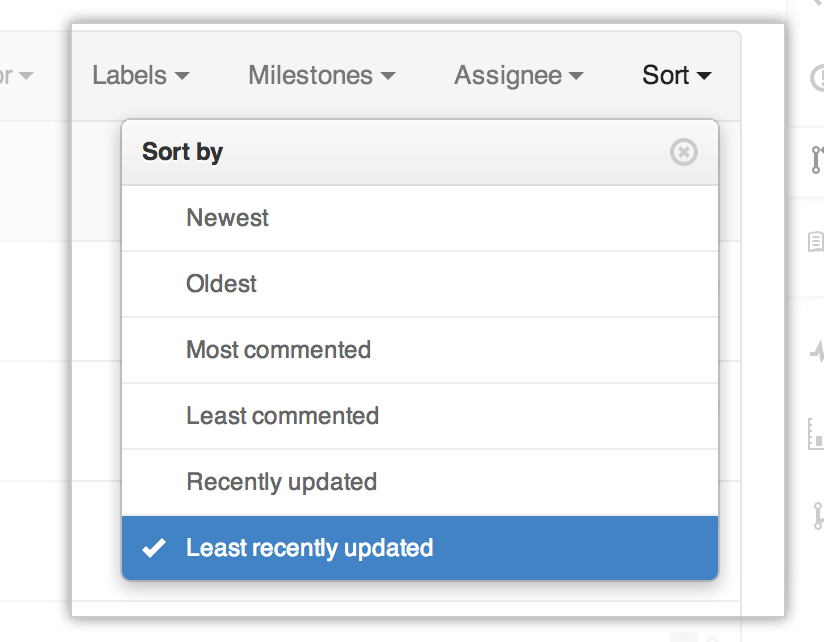

Pull requests let you tell others about changes you've pushed to a GitHub repository. Once a pull request is sent, interested parties can review the set of changes, discuss potential modifications, and even push follow-up commits if necessary.
This guide walks through the process of sending a hypothetical pull request and using the various code review and management tools to take the change to completion.
Types of collaborative development models
There are two popular models of collaborative development on GitHub: Fork & pull and shared repository.
Fork & pull
The fork & pull model lets anyone fork an existing repository and push changes to their personal fork without requiring access be granted to the source repository. The changes must then be pulled into the source repository by the project maintainer. This model reduces the amount of friction for new contributors and is popular with open source projects because it allows people to work independently without upfront coordination.
Shared repository model
The shared repository model is more prevalent with small teams and organizations collaborating on private projects. Everyone is granted push access to a single shared repository and topic branches are used to isolate changes.
Pull requests are especially useful in the fork & pull model because they provide a way to notify project maintainers about changes in your fork. However, they're also useful in the shared repository model where they're used to initiate code review and general discussion about a set of changes before being merged into a mainline branch.
Before you begin
This guide assumes that you have a GitHub account, that you've forked an existing repository, and that you've pushed changes to your fork. For help with forking and pushing changes, see the Forking a Repo article.
Initiating the pull request
In the following example, codercat has completed some work on a fork of the Octocat's Spoon-Knife repository, pushed a commit to a topic branch in his fork, and would like someone to review and merge.
Navigate to your repository with the changes you want someone else to pull and press the Pull Request button.
- Switch to your branch
- Click the Compare & review button
Pull requests can be sent from any branch or commit but it's recommended that a topic branch be used so that follow-up commits can be pushed to update the pull request if necessary.
Reviewing the pull request
After starting the review, you're presented with a review page where you can get a high-level overview of what exactly has changed between your branch and the repository's master branch. You can review all comments made on commits, identify which files changed, and get a list of contributors to your branch.
Changing the branch range and destination repository
By default, pull requests are assumed to be based on the parent repository's default branch. In this case, the hubot/Spoon-Knife repository was forked from octocat/Spoon-Knife so the pull request is assumed to be based on the master branch of the octocat/Spoon-Knife repository.
In many cases, the defaults are appropriate. If necessary, you can change the parent repository and branch with the drop-down lists. Clicking on Edit at the top allows you to swap between your head and base, as well as establishing diffs between various reference points. References here must be branch names in your GitHub repository.
The easiest way of thinking about the branch range is this: the base branch is where you think changes should be applied, the head branch is what you would like to be applied.
Changing the base repository changes who is notified of the pull request. Everyone that can push to the base repository will receive an email notification and see the new pull request in their dashboard the next time they sign in.
When you change any of the info in the branch range, the commit and files changed preview areas will update to show your new range.
Using the compare view, you can set up comparisons across any arbitrary timeframe.
Sending the pull request
When you're ready to submit your pull request, click Create pull request.
You'll be taken to a discussion page where you can enter a title and optional description. You'll still be able to see exactly which commits will be included when the pull request is sent.
Once you've entered the title and description, made any necessary customizations to the commit range, and reviewed the commits and file changes to be sent, press the Send pull request button.
The pull request is sent immediately. You're taken to the main pull request discussion and review page.
After your pull request is sent, any new commits pushed to your branch will automatically be added to the pull request. This is especially useful if you need to make more changes.
Managing pull requests
All pull requests sent or received by you are browsable through the pull request dashboard. Pull requests for a specific repository are also browsable by anyone with access by visiting the Pull Requests page.

The pull request dashboard and the repository pull request list support a wide range of filtering and sorting controls. Use them to narrow down the list to the pull requests you're interested in.
Reviewing proposed changes
When you receive a pull request, the first thing to do is review the set of proposed changes. Pull requests are tightly integrated with the underlying git repository, so you can see exactly what commits would be merged should the request be accepted:
You can also review the cumulative diff of all file changes across all commits, either split or unified.
Pull request discussion
After reviewing the basic description, commits, and cumulative diff, the person tasked with applying the changes may have questions or comments. Perhaps the coding style doesn't match project guideline, or the change is missing unit tests, or maybe everything looks great and some props are in order. The discussion view is designed to encourage and capture this type of discussion.

The discussion view starts with the pull request's original title and description and then captures additional activity to display chronologically from there. Any of the following types of activity are captured as they happen:
- Comments left on the pull request itself.
- Additional commits pushed to the pull request's branch.
- File and line notes left on any of the commits included in the pull request's range.
Pull request comments are Markdown compatible, so you can embed images, use pre-formatted text blocks, and other formatting supported by Markdown.
Viewing long-running pull requests
When a feature or a bugfix goes on for months but never ships nor dies, you often want to take a closer look to see what's preventing that pull request from being resolved. Making it possible to find old but still-active pull requests makes that easier.
You can view and sort long-running pull requests from your repository's Pull Request page.

A long-running pull request is one that has existed for more than a month and which has seen activity within the past month. This filter displays those long-running pull requests sorted by life span: the amount of time from creation to the most recent activity.